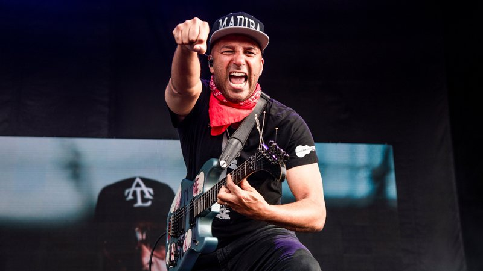

Um dos guitarristas mais incomuns do nosso tempo. Ele não tem medo de experimentar o som da guitarra, durante o jogo ele costuma usar objetos inesperados, por exemplo, um plugue, em vez de uma palheta.
Thomas Morello nasceu em 1964 em Harlem, Nova York. Sua mãe, Mary Morello, de ascendência ítalo-irlandesa, trabalhou como professora de inglês na Alemanha, Espanha e Quênia. Pai, de descendência queniana, trabalhou em uma missão diplomática. O avô paterno foi o primeiro presidente eleito na história do Quênia. Os pais do futuro músico se conheceram durante um protesto pró-democrático no Quênia. Ao saber da gravidez de Tom, seus pais voltaram para a América.
Quando Tom tinha 16 meses, seu pai retornou ao Quênia e disse que negava sua paternidade em relação ao jovem. A mãe do menino o criou sozinho, a família morava na cidade de Libertyville, em Illinois. Mary Morello trabalhou como professora de história na escola e também como professora.
Tom estava interessado em arte desde a infância. Durante seus estudos, ele cantou em um coral da escola, participou de peças da escola. A segunda paixão do adolescente era política, sua visão de mundo na época pode ser chamada de anarquista.
Em 1982, ele se formou com honras. No mesmo ano, ele entrou em Harvard. Ele se formou em 1986, tornando-se bacharel em ciências sociais. Após a formatura, ele se mudou para Los Angeles. Morello começou sua vida em Hollywood, confiando apenas em si mesmo. No início, ele teve azar, o jovem teve que passar fome, para sobreviver, ele concordou com qualquer emprego, em particular, que trabalhava como stripper.
Em 1991, Morello reuniu um grupo chamado Rage Against the Machine. Em 1992, seu primeiro álbum com o mesmo nome foi lançado. Em 2000, a banda se apresentou pela última vez no Grand Olympic Auditorium. Em 2003, a banda lançou seu último álbum, Live no Grand Olympic Auditorium. Após o fim do Rage Against the Machine, Morello formou uma nova banda, o Audioslave. O grupo gravou três álbuns. Em 2007, o Rage Against the Machine se reuniu, durante o qual ocorreram sete apresentações da banda. O grupo continuou o show em 2008, visitando também a Austrália e a Nova Zelândia. A banda continuou suas atividades de concerto até 2011. Em 2016, Morello é membro do supergrupo Profetas da Raiva.
O guitarrista do Rage Against The Machine e Audioslave foi quem reinventou a guitarra do hip hop lá nos anos 90. Com os pedais e captadores instalados em suas guitarras, Tom Morello procurava emitir sons de scratches típicos de um DJ em suas composições. A maioria das guitarras de Morello foram personalizadas por ele mesmo ou pelas marcas. Essa customização permitiu que ele usasse o máximo de sua criatividade e criasse um som único e característico dele.
Sua parceria mais conhecida e clássica desde 1986 é a Arm The Homeless (em português, Armem Os Sem-Teto). Junto com a inscrição no modelo Mongrel Custom com corpo de Stratocaster e braço de Kramer estão quatro hipopótamos brancos e o símbolo do comunismo (foice e o martelo) na frente e um hipopótamo maior pintado na parte de trás de cabeça para baixo.
A Arm The Homeless foi feito pelo grupo Performance Guitar, nos Estados Unidos, especialmente para Morello com as especificações dele. Uma delas foi que a guitarra tinha que ter dois captadores (um EMG 81 no braço e outro 85 na ponte). São eles que captam as variações do campo magnético das cordas e produzem aqueles solos incríveis de “Bulls On Parade”, por exemplo. Pra comemorar o aniversário de 50 anos desse cara, nós reunimos abaixo dez guitarras incríveis que ele criou com o Rage Against The Machine, Audioslave e Street Sweeper Social Club.
Nome completo Thomas Baptist Morello Também conhecido(a) como The Nightwatchman Nascimento 30 de maio de 1964 (57 anos) Local de nascimento Harlem, Nova Iorque, Nova Iorque Estados Unidos Gênero(s) Metal alternativo, funk metal, heavy metal, rap metal, nu metal, hardcore punk, música tradicional Ocupação(ões) Músico
Modelos de instrumentos Fender Stratocaster "Soul Power", Performance Guitar "Arm The Homeless" Período em atividade 1979-presente Outras ocupações Compositor, ator, ativista político Gravadora(s) Sony BMG, Epic, Interscope Afiliação(ões) Rage Against the Machine, Audioslave, The Nightwatchman, Prophets of Rage, Bruce Springsteen and the E Street Band, Street Sweeper Social Club, Axis of Justice